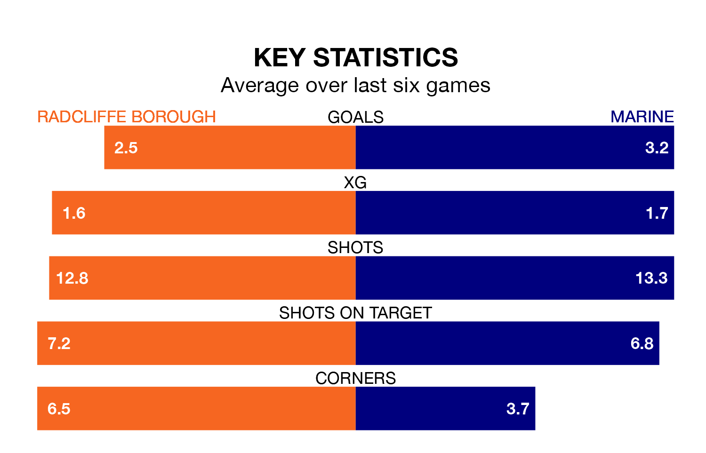

Two of the Northern Premier League's top sides face each other at the Stainton Park Stadium in Saturday's kick-off, when table-topping Radcliffe Borough host third-placed Marine.
Radcliffe have picked up 22 wins and two draws from 30 games so far this season, and sit 15 points above the visitors going into the 3pm match.
Marine, meanwhile, have won 15 and drawn eight, picking up 53 points.
With 82 goals in 30 games so far this season, Radcliffe are the league's highest scorers with 2.7 goals per game. And they are conceding fewer than average, letting in 43 goals at a rate of 1.4 per game.
Marine are also above average scorers, with 2.1 goals per game, compared to a league average of 1.7. They have conceded 1.2 goals per game.
Borough are in reasonable form in the Northern Premier League, with three wins and two draws from their last six games.
With four wins and two draws over that period, the visitors' form is better – they have taken 14 points from 18, compared to the Boro's 11.
In the last five years, Radcliffe and Marine have played each other on five occasions. Radcliffe won one of them, Marine two, and they drew twice.
On average, the Boro scored 1.2 goals and Marine 1.4 in those matches.
Their last meeting was on September 26, when Marine won 3-2 at home.
Radcliffe's last match was on Tuesday, a 2-2 draw against Atherton Collieries.
Marine drew 1-1 with Ilkeston Town last time out, on February 3.
Updated: 12:06 (UTC), 15/02/24